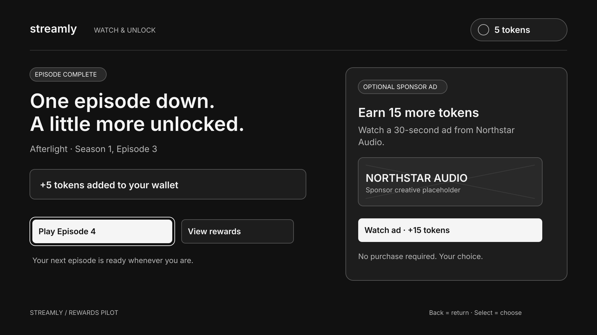

New features / Wireframe prototype
An optional exchange, made explicit.
What would make a viewer’s exchange with advertising understandable and optional? This concept connects episode completion, sponsor engagement, and a precisely described reward.

Explain the exchange before the action
The example journey moves from 5 tokens for episode completion to 20 after an ad, 25 after an optional sponsor demo, then 0 after redeeming one eligible ad-break skip. The viewer can continue watching without taking the offer.
Design for the exceptions too
The saved set includes TV, mobile, wallet, playback, and recovery states. A QR scan alone does not earn the bonus. Redemption names the specific episode and ad break instead of implying an entire ad-free episode.
What has been checked
The existing verification notes cover the core balance transitions and selected recovery paths in an offline click-through prototype. Keyboard Tab, Enter or Space, and Escape are supported; directional TV remote behavior is still a design annotation.
What needs evidence
Viewer motivation, reward comprehension, advertiser economics, and the token values need validation. Native Figma components, connected Figma flows, and full remote navigation remain unfinished.
ARTIFACTS & EVIDENCE
Explore the work.
Concept and simulated prototype. No real reward accounts, transactions, advertiser partnership, cross-device synchronization, or measured commercial outcome.
Figma files may require sign-in or permission. Public documentation remains available on GitHub .